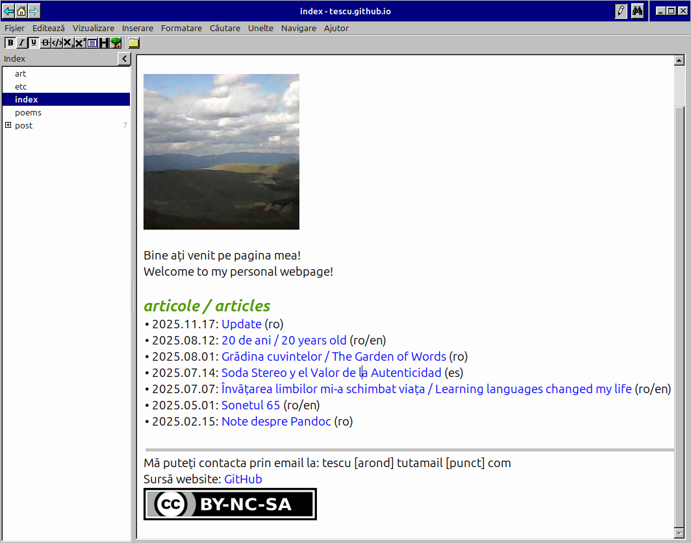

Update
După o pauză de peste 3 luni de la ultima postare, mă întorc cu niște știri modeste despre starea actuală a saitului meu web.
Am decis să rescriu întregul sait sub formatul vim-wiki folosind Zim, una dintre cele mai bune unelte pentru scrierea unui jurnal digital pe care le-am folosit până acum. Noua configurație îmi permite să accesez/vizualizez saitul complet offline într-un mod foarte plăcut folosind editorul de text vizual. Modificarea articolelor și legăturilor ar trebui să fie mult mai ușoară de acum încolo, și sper ca acest lucru să mă motiveze să scriu mai mult în viitor :).
Așadar, așteptați-vă la postări noi cât de curând!

Zim în acțiune!
Pentru cei interesați de partea tehnică a noului sait, principalul avantaj al acestei configurări este posibilitatea de-a edita vizual întregul sait, în stilul unui editor WYSIWYG (What You See Is What You Get), adică nu mai sunt nevoit să mă folosesc de un browser web sau alte unelte externe pentru a vizualiza modificările pe care le realizez și nu mai trebuie să scriu conținutul paginilor manual folosind Markdown sau HTML. Pe scurt, mi-am eliminat o mare parte din munca asociată publicării pe sait!
Asta este doar una dintre multele funcționalități ale acestei unelte. Puteți vedea codul sursă al progamului Zim aici și un ghid cu mai multe exemple aici.
Backlink: index